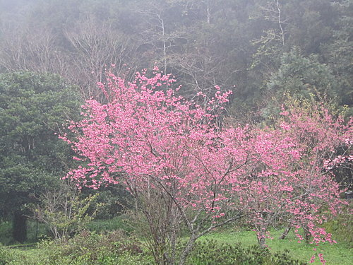
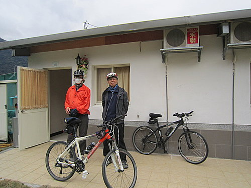
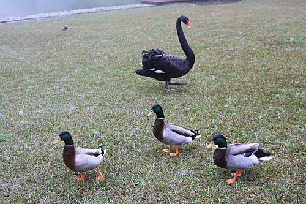

2.
待大家填飽肚子後，眾獅群出發囉！
沿路人車不多，氣溫舒適，
是個非常適合自行車騎乘的環境，
「羅馬公路」網路上多有所介紹，在此不再贅述，
坡度對入門者來說不算「硬斗」（台語），
一路緩上坡約400公尺的高度。

印象中僅爬上「金鳥海族樂園」那段坡度較陡，
且聽說這個樂園是山上的海洋樂園，
以前是台北小學生畢業旅行的最愛，
跟現在小學生的畢業最愛「三、六、九」
（劍湖山、六福村樂園、九族文化園區）真的昔非今比。
有道是「羅馬不是一天造成的」，
雖寒風徐徐；緩緩坡度，
但是「羅馬公路」肯定一天就可以騎完。
一路挺進到羅馬公路盡頭，來到了桃園縣羅浮村，
一行人進駐在北橫公路的「羅馬之星」民宿，
老闆一聽我們是住宿客，馬上吆喝泡起熱茶招待暖身，
我跟『貓哥』先到先享受。
夜晚河東獅群們合體，
就在這山路旁民宿後方整排一條龍客房歇息一宿。
晚餐很有當地風味菜色，
大家喝酒暢談、附風雅俗的學習品嚐抽雪茄，
還有卡拉ＯＫ助興。
騎乘的樂趣實在不是比誰快腳程好，
而是大家用心騎完每一段路，
就像每個人各自酒量不同，同醉就不同杯囉！

3.
經過一晚的體力補充，
便開始這趟騎乘的壓軸挑戰---
前往北橫海拔1200公尺左右的「明池森林園區」，
我聽說那裡還有個「馬告生態公園神木群」，
早已心所嚮往非到不可。
早上眾獅群再出發，
北橫之路這段算是早期的北部橫貫公路，
拜榮民之賜篳路藍縷，路面不寬，
坡度較陡，曲曲折折，不見新的柏油路面，
兩旁的山峰俊秀挺拔，我迎著蕭颯的春風邊騎邊賞景，
槭樹、山野櫻、翠綠的竹林，
遠山樹林呈現紅、黃、綠不同層次的顏色，
近看感受又迴然不同。
偶爾路旁的原住民幾句『快到了』加油聲，
其實惠而不實，離目的地還很遠。
我跟貓哥很快就從高義部份直上巴陵大橋，
佇足一會兒前無古人；
後無來者，看不到三國諸葛亮，
貓哥是這次出遊的河東獅獅頭，
來到巴陵大橋非幫他拍照紀念不可，

到了大漢橋是海拔約1040公尺，氣溫下降且風勢不小，
大夥在此泡茶等便當，一醉醒來，
原來我錯把這易守難攻磅礡群山，
桃園鄉這塊世外桃源之地，誤為是蜀漢三國的漢中盆地。
4.
吃完飯補充能量，不敢多做休息繼續往明池前進，
坡度陡且長，卻也人車沓然，細細品味高山之美，
應證傑安特老闆那句名言
『開車太快、走路太慢，騎踏車剛剛好』，
每個角度都有你感動的地方，
看著公路穿鑿的岩壁有如鬼斧神工，
山下的澗水宛如一條銀絲帶貫穿整的山谷，
空山鳥飛鳴清脆劃破天際，剎那間雖然滿身汗水，
卻將心頭一身塵顢洗滌而盡。
過了大漢橋連續爬坡，我們已快進入宜蘭縣界，
前往明池山莊路上，此時風大又下起小雨來，
氣溫又下降許些，剩下三公里多車程，
體力也幾乎透支，又是前無來車，後無追隨者，
此時也只能當過了河的卒子勇往直前，
看到明池森林遊樂園爬坡三公里的告示牌，
精神為之一振，再苦也要橕過去，
最後我與貓哥終於到達明池山莊門口，
當時氣溫攝氏5.5度下著小雨，時間下午1時30分。
晚上入住開滿櫻花（虫二）風月無邊明池山莊。

隔天早上起個大早，
搭乘專車前往馬告神木園區朝聖，
單程顛陂壹個小時左右才到神木林區，
氣溫僅五度幸好沒有下雨，
只是身處濕冷雲霧地帶，雖沒下雨但雲霧繚繞，
難得遠山美景無緣映入眼簾，
千年神木群也是難窺其真實面貌，
只是這些幾百年、幾千年的參天巨木
活化石植物（孓遺植物）兀立在此多年，
任憑烈日陽光、風吹雨打並躲過被盜伐之命運，
都只能默默忍受寸步不移，
然而卻比不上我這芸芸眾生忙裡偷閒到此一遊，
大口呼吸芬多精林沐拂袖就走的騎士旅人。

走在明池森林湖泊步道，
鴛鴦、綠頭鴨、黑天鵝（小名阿娥），
宛如人間仙境，我等即將盡興賦歸，
把一切煩勞、憂愁通通丟入明池。

走筆至此，
我已用心、用力騎完我人生旅途中的一段路程，
當中夾雜汗水、雨水以及充滿美景、美食回味；
也希望河東獅友們也都能有走過人生中
一段屬於你們自己充滿回憶經驗的騎乘，
期待再相會。
阿祥 筆
3月9日上午11時於高雄地院